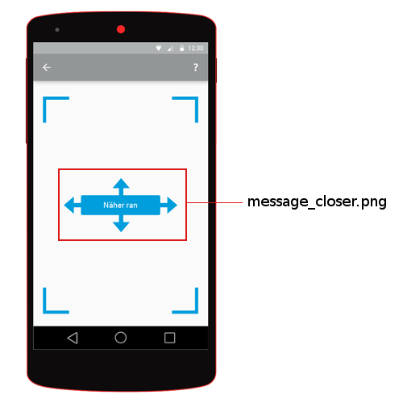
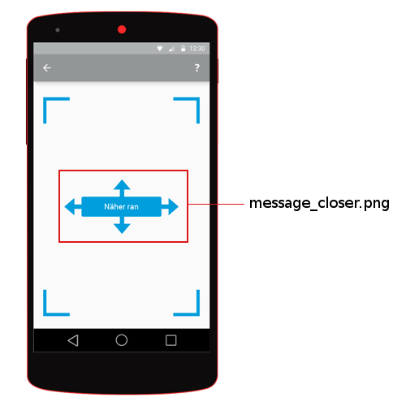
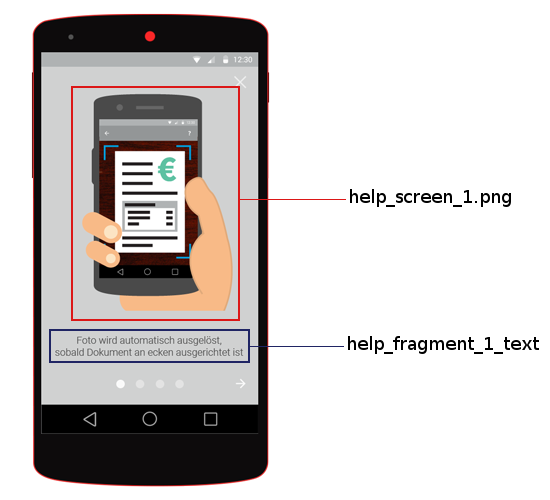

Styling the Image Capturing Screens¶
The Gini Android Vision library is built with the option to adopt the styling regarding the needs of your CI. Therefore the UI ressources used by the Gini Android Vision library can be replaced or customized.
Screen Resources¶
You can replace the images used by the sdk simply by adding images with the same name to the drawables folder (and resolution dependent subfolders) of your app. The used texts can be replaced by adding a string resources with the same key in the values/strings.xml file of your app. The following screen images will show which image and which text ressources are used on which screen. The color scheme is as follows: red- images, yellow- animations blue- texts.
 


Help Screen #1¶
Help Screen #2¶

Help Screen #3¶

Help Screen #4¶

Shutter Screen¶

Processing Screen¶
The processing screen contains an animation which is defined in drawables/processing_screen_1.xml.

List of all image files¶
- corners.png
- help_screen_1.png
- help_screen_2_falsch.png
- help_screen_2_richtig.png
- help_screen_3_falsch.png
- help_screen_3_richtig.png
- help_screen_4_falsch.png
- help_screen_4_richtig.png
- icon_action_help.png
- message_closer.png
- message_still.png
- processing_screen_11.png
- remittance_corners.png
- shutter_bottom.png
- shutter_middle.png
- shutter_top.png
List of all animations¶
- processing_screen_1.xml
List of all text ressources¶
- title_activity_scanner
- action_settings
- net.gini.android.vision.title_activity_choice
- action_help
- title_activity_help
- action_back
- action_forward
- help_fragment_title
- help_fragment_1_text
- help_fragment_2_text
- help_fragment_3_text
- help_fragment_4_text
Customizable colors¶
- net.gini.android.vision.theme.actionBar.background
- The background color of the action bar when the ScannerActivity is displayed.
- net.gini.android.vision.theme.actionBar.color
- The color of the text on the the action bar when the ScannerActivity is displayed.
- net.gini.android.vision.theme.statusBar
The color of the status bar when the ScannerActivity is displayed.
Note
Please note that this option is ignored in Android versions lower than 5.0 (Lollipop).
Listed below is an example file which would go into the application’s res/styles/style.xml` file.
<?xml version="1.0" encoding="utf-8"?>
<resources>
<color name="net.gini.android.vision.theme.actionBar.background">#009edc</color>
<color name="net.gini.android.vision.theme.actionBar.color">#ffffff</color>
<color name="net.gini.android.vision.theme.statusBar">#007eb0</color>
</resources>
Debug Options¶
Enabling the framemeter¶
The framemeter is displayed on the upper right corner of the scanner activity and displays how long the processing of one camera frame took. The lower the number, the faster Gini can process images on the device. Which basically means that lower numbers are better.
<integer name="net.gini.android.vision.show_processing_average">0</integer>
The value is an integer describing the framemeter’s visibility as described in the android documentation. Usually you will use 0 while debugging or testing and 2 in release builds.